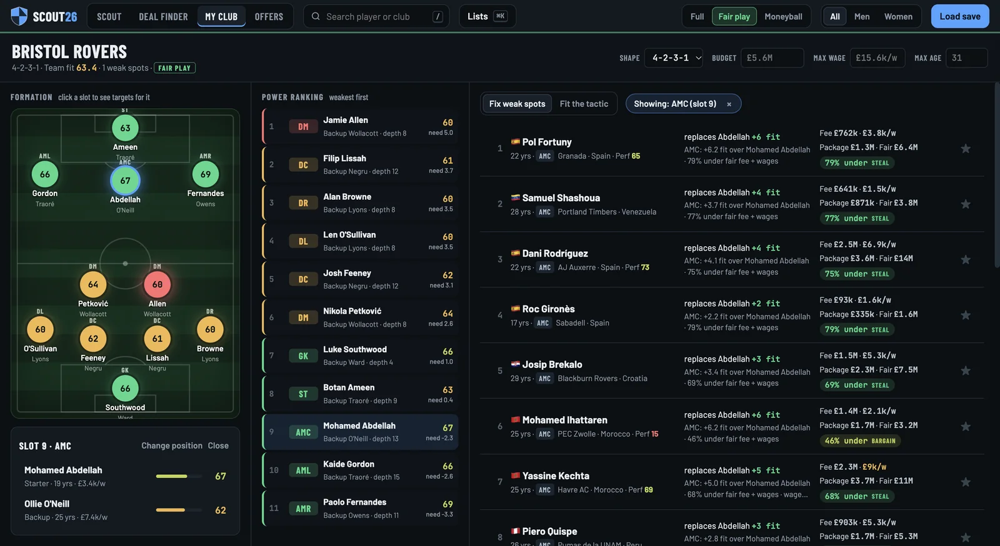
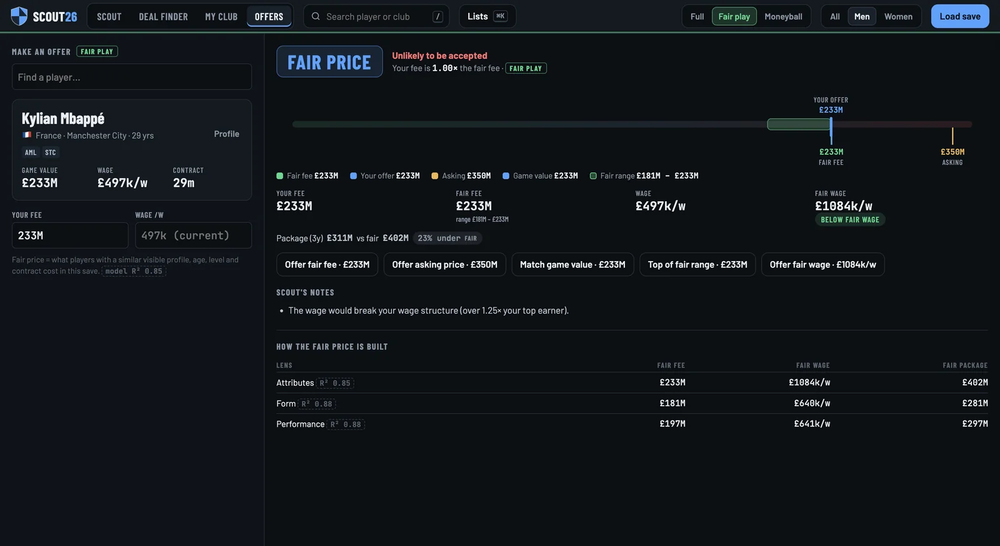
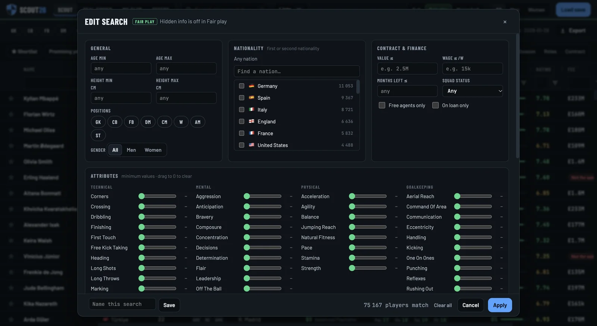

01
Full
The whole truth.
Current and potential ability, hidden attributes like consistency and injury proneness, personality. Wonderkids and hidden gems in seconds.
Free scouting dashboard for Football Manager 26
FM26 Scout reads every player in your save, without changing it, and opens them in a recruitment dashboard. See every number, only what your scouts would see, or nothing but match output.
Free. Ready in about three minutes.
FM26 Scout runs on Windows and Apple Silicon Macs.
Pick a mode. The screen below switches.


Numbers from a real Bristol Rovers save, January 2028. Your player count depends on your database.
Three ways to recruit
01
The whole truth.
Current and potential ability, hidden attributes like consistency and injury proneness, personality. Wonderkids and hidden gems in seconds.
02
Find them yourself.
What the game shows a manager, and no more. Visible attributes, role fit and stats. Nothing that would spoil your save.
03
Only output counts.
Attributes switched off. A performance score from per-90 match stats, set against what the player costs.
One click switches modes inside the app. Same save, same players, different eyes.
The analysis
01My Club
Your formation is read from your recent matches. Every slot gets a fit score, positions are ranked weakest first, and the best-value targets for the gap you click are listed, with fee, package and how far under fair price they sit.

02Offers
Type a fee and a wage. You get a verdict, an estimate of whether the club accepts, where your offer sits in the fair range, and how that fair price was built.

03Edit search
Men and women, every nation. Age, height, position, value, wage, contract, a minimum for any attribute. Name the search and reuse it next window.

Real fee and wage against a fair price from similar players in your save. Steals, bargains and overpays, sorted.
Ability, standout attributes and traits, contract, and price against fair price, on one card.
Star players into a shortlist, save searches, export any list to CSV for your own analysis.
Every player in the save, from every nation, with one switch between men's and women's football.
Kick-off
Unzip, double-click FM26 Scout. Your browser opens by itself.
Your FM26 saves are listed. Click one and give it about a minute.
Filter, compare, shortlist. Close the tab and the app closes with it.
Transfer window's open
Free. Read-only. Your save never leaves your computer.
FM26 Scout isn't code-signed yet, so your computer asks you to confirm once. The code is public on GitHub if you want to check what it does.
FM26-Scout.exe. If Windows says it protected your PC, click More info.Apple Silicon Macs only (M1 or later). Intel Macs aren't supported.
Before you ask
No. The save is only read, never written. FM26 Scout makes its own copy of the player data on your computer and works from that.
Only if you want it to be. Fair play hides CA, PA, hidden attributes and personality, so you scout with what the game shows a manager. Moneyball hides attributes entirely.
Football Manager 26 saves (.fm). The app lists the ones it finds. Loading another save replaces the previous one.
Yes. Every player in the save, men and women, with a filter to switch between them.
The app isn't code-signed yet, which costs money and paperwork. The warning only appears on the first launch. See the steps above, or read the code on GitHub.
No. It's free and open source. No account, no subscription, no tracking.